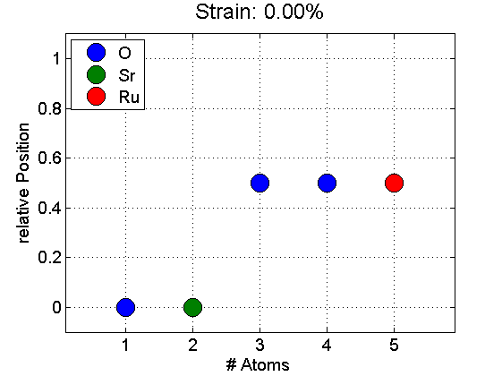
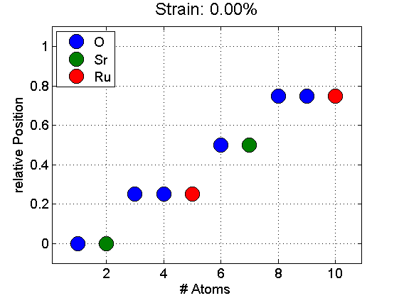
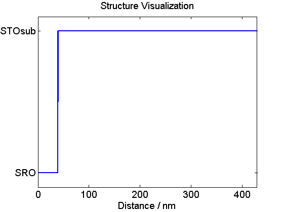
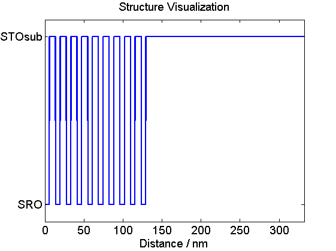

Structure Build Example
This is a first example to get used to the basic element of each simulation of the udkm1dsim toolbox: a sample structure.
For the 1D case a sample structure consists of a linear chain of different "layers". These layers themselves are called sub-structures and can again consist of sub-layers or finally of a certain number of unit cells. Each unit cell contains a number of atoms at certain relative positions in this unit cell.
In this example script the basic concepts of creating atoms, unit cells, and sample structures are introduced. Furthermore one should easily see how to access all the properties of these physical objects.
Be sure to include all folders of the udkm1dsim toolbox to your MATLAB search path. Especially the /parameters and /helpers folders with all their subfolders.
Contents
here we clear the workspace and close all figures
clear all; close all; % these are some units and constants we can use later on u = units; const = constants;
Atoms
All necessary data are loaded from the paramter files defined by the given element symbol. As an additional 2nd parameter one can give an ID if you work with different atoms of the same element. The optinal 3rd input parameter is the ionicity of the atom, which has to be present in the parameter files.
O = atomBase('O'); Op1 = atomBase('O','Op1',-1); Op2 = atomBase('O','Op2',-2); Ti = atomBase('Ti'); Sr = atomBase('Sr'); Ru = atomBase('Ru'); Pb = atomBase('Pb'); Zr = atomBase('Zr'); % the available parameters of each atom can be easily displayed: O.disp();
Atom with the following properties ID : O symbol : O name : Oxygen atomic number Z : 8 mass number A : 15.9994 mass [kg] : 2.6568e-26 ionicity : 0 Cromer Mann coeff. : 3.0485 2.2868 1.5463 0.867 13.2771 5.7011 0.3239 32.9089 0.2508
Ru.disp();
Atom with the following properties ID : Ru symbol : Ru name : Ruthenium atomic number Z : 44 mass number A : 101.07 mass [kg] : 1.6783e-25 ionicity : 0 Cromer Mann coeff. : 19.2674 12.9182 4.86337 1.56756 0.80852 8.43467 24.7997 94.2928 5.37874
Of course you can also access single properties, e.g. the mass of Ti atom:
disp(Ti.mass/u.kg);
7.9485e-26
Mixed Atoms
If you want to create a mixed atom for a solid solution you can easily achieve this by the following lines of code. The input for the initialization of the mixed atom are the symbol, ID and name, whereas only the first is required.
ZT = atomMixed('ZT', 'ZT', 'Zircon-Titan 0.2 0.8'); ZT.addAtom(Zr, 0.2); ZT.addAtom(Ti, 0.8); % Let's have a look at the mixed properties: ZT.disp();
Atom with the following properties ID : ZT symbol : ZT name : Zircon-Titan 0.2 0.8 atomic number Z : 25.6 mass number A : 56.5384 mass [kg] : 9.3884e-26 ionicity : 0 Cromer Mann coeff. : 0 0 0 0 0 0 2 Constituents: Zirconium 20.00% Titanium 80.00%
Unit Cells
Now we have created enough atoms to build a unit cell. We choose a cubic unit cell of the perovskite SrRuO3 on a substrate of SrTiO3. However we need to define some properties of the unit cell first, Note that the thermal conductivity, linear thermal expansion, and heat capacity are defined either as constants or anonymous functions of the termperature T in Kelvin.
% c-axis lattice constants of the two materials cSTOsub = 3.905 *u.ang; cSRO = 3.94897 *u.ang; % sound velocities [nm/ps] of the materials svSRO = 6.312 *u.nm/u.ps; svSTO = 7.800 *u.nm/u.ps;
SrRuO3 unit cell
propSRO.aAxis = cSTOsub; % aAxis propSRO.bAxis = cSTOsub; % bAxis propSRO.debWalFac = 0; % Debye-Waller factor propSRO.soundVel = svSRO; % sound velocity propSRO.optPenDepth = 43.8*u.nm; % optical penetration depth propSRO.thermCond = 5.72*u.W/(u.m *u.K); % heat conductivity propSRO.linThermExp = 1.03e-5; % linear thermal expansion propSRO.heatCapacity = @(T)(455.2 + 0.112.*T - 2.1935e6./T.^2); % heat capacity [J/kg K] % lets create the unit cell SRO = unitCell('SRO','SRO',cSRO,propSRO); % add some atoms at relative positions in the unit cell SRO.addAtom(O,0); SRO.addAtom(Sr,0); SRO.addAtom(O,0.5); SRO.addAtom(O,0.5); SRO.addAtom(Ru,0.5);
SrTiO3 substrate
propSTOsub.aAxis = cSTOsub; % aAxis propSTOsub.bAxis = cSTOsub; % bAxis propSTOsub.debWalFac = 0; % Debye-Waller factor propSTOsub.soundVel = svSTO; % sound velocity propSTOsub.optPenDepth = Inf; % optical penetration depth propSTOsub.thermCond = 12*u.W/(u.m *u.K); % heat conductivity propSTOsub.linThermExp = 1e-5; % linear thermal expansion propSTOsub.heatCapacity = @(T)(733.73 + 0.0248.*T - 6.531e6./T.^2); % heat capacity [J/kg K]
Non-Linear Strain Dependence
In general the position of each atom in a unit cell dependence linearly from an external strain. In some cases this linear behaviour had to be altered. This can be easily achieved by providing a strain dependent anonymous function handle for the atom position when the atom is added to the unit cell.
STOsub = unitCell('STOsub', 'STOsub', cSTOsub, propSTOsub); STOsub.addAtom(O, @(strain)(0.1*strain^2)); % quadratic strain dependency STOsub.addAtom(Sr,0); STOsub.addAtom(O,0.5); STOsub.addAtom(O,0.5); STOsub.addAtom(Ti,0.5); % again we can display all properties of the unit cells: SRO.disp();
Unit Cell with the following properties ID : SRO name : SRO a-axis [Ang] : 3.905 b-axis [Ang] : 3.905 c-axis [Ang] : 3.949 area [Ang^2] : 15.249 volume [Ang^3] : 60.2179 mass [kg] : 3.9303e-25 density [kg/m^3] : 6526.7917 Debye Waller Factor [m^2] : 0 sound velocity [nm/ps] : 6.312 spring constant [kg/s^2] : 100.4135 phonon damping [kg/s] : 0 opt. pen. depth [nm] : 43.8 opt. refractive index : 0 0 opt. ref. index/strain : 0 0 thermal conduct. [W/m K] : @(T)(5.72.*T./T) linear thermal expansion [1/K]: @(T)(1.03e-05.*T./T) heat capacity [J/kg K] : @(T)(455.2+0.112.*T-2.1935e6./T.^2) subsystem coupling [W/m^3] : @(T)(0.*T./T) 5 Constituents: Oxygen 0.00 @(strain)(0*(strain+1)) Strontium 0.00 @(strain)(0*(strain+1)) Oxygen 0.50 @(strain)(0.5*(strain+1)) Oxygen 0.50 @(strain)(0.5*(strain+1)) Ruthenium 0.50 @(strain)(0.5*(strain+1))
we can also visualize the positions of the atoms in the unit cell:
SRO.visualize();
Clone to Multiple
For some simulations it may save computational time if a larger spacial grid is used. This can be achieved by e.g. providing larger unit cells. In order to automatically do that task we can easily clone unit cells to multiples of them:
SRO2 = SRO.clone2multiple(2); SRO2.visualize();
Structure
Since we have build two different kinds of unit cells we can build a sample structure
S = structure('Single Layer'); S.addSubStructure(SRO,100); % add 100 layers of SRO to sample S.addSubStructure(STOsub,1000); % add 1000 layers of STO substrate % display the properties of the structure and visualize S.disp();
Structure properties: Name : Single Layer Length: 429.99 nm ---- 100 times SRO: 39.49 nm 1000 times STOsub: 390.50 nm ----
S.visualize();
there are various methods to get informations from the structure which are mostly self explanatory:
[dStart, dEnd, dMid] = S.getDistancesOfUnitCells(); K = S.getNumberOfSubStructures(); L = S.getNumberOfUniqueUnitCells(); M = S.getNumberOfUnitCells(); P = S.getAllPositionsPerUniqueUnitCell(); I = S.getDistancesOfInterfaces(); cAxis = S.getUnitCellPropertyVector('cAxis'); % we can also build more complicated structures like super lattices: S2 = structure('Super Lattice'); % define a single double layer DL = structure('Double Layer'); DL.addSubStructure(SRO,15); % add 15 layers of SRO DL.addSubStructure(STOsub,20); % add 20 layers of STO substrate % add the double layer to the super lattice S2.addSubStructure(DL,10); % add 10 double layers to super lattice S2.addSubStructure(STOsub,500); % add 500 layers of STO substrate % display and visualize the structure: S2.disp();
Structure properties: Name : Super Lattice Length: 332.58 nm ---- SubStructure 10 times: Structure properties: Name : Double Layer Length: 13.73 nm ---- 15 times SRO: 5.92 nm 20 times STOsub: 7.81 nm ---- 500 times STOsub: 195.25 nm ----
S2.visualize();
now there are some more interfaces than before:
I2 = S2.getDistancesOfInterfaces(); disp(length(I2));
21